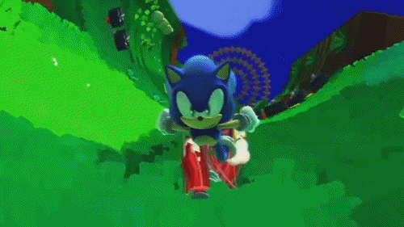
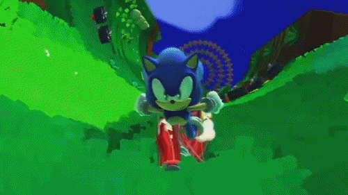

Oieee Alyson Bolzan
i can go...
... as far as i want!
:) Aly Bolzan
O caminho do justo está cercado por todos os lados pelas iniquidades dos egoístas
e pela tirania dos perversos. Bendito é aquele que, em nome da caridade e da boa vontade,
pastoreia os fracos pelo vale das trevas, pois ele é verdadeiramente o protetor de seus
irmãos e o salvador dos filhos perdidos. E Eu atacarei com grande vingança e raiva
furiosa aqueles que tentam envenenar e destruir meus irmãos. E você saberá: meu nome
é o Senhor quando minha vingança cair sobre ti!